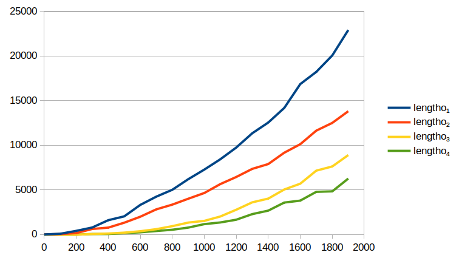

Benchmarking list-length relations
This article analyzes the relationship between a list and its length (represented as an Oleg number). Four implementations in miniKanren are given that express this relation.
1 Three implementations recurring on l
The following relation falls out from transforming regular Racket code.
(defrel (lengtho₁ l n) (conde ((== l '()) (== n '())) ((fresh (a d n-1) (== l `(,a . ,d)) (pluso n-1 '(1) n) (lengtho₁ d n-1)))))
This definition depends on pluso from The Reasoned Schemer 2nd Edition (hereafter called TRS2E).. In fact, TRS2E contains its own definition of lengtho, identical to the above in all but the variable names.
Note that, since a + b = b + a, any expression of the form (pluso a b c) can be rewritten as (pluso b a c). The meaning is the same, but the performance may be different. This leads to another possible implementation, lengtho₂.
(defrel (lengtho₂ l n) (conde ((== l '()) (== n '())) ((fresh (a d n-1) (== l `(,a . ,d)) (pluso '(1) n-1 n) (lengtho₂ d n-1)))))
Rather than committing to '(1) either being the first or second argument, we can specialize this call to pluso, since what what is really being expressed is a two-place relation between a natural number and its successor. Let’s define a relation called +1o which expresses that relationship exactly. This relation recurs on a list of bits representing little-endian natural numbers, where each is either empty or ends in a 1. These are called Oleg numbers.
Note that when you encounter a nonzero Oleg number whose first bit is 0, its tail must not be empty, it instead must be a pair. I’ve provided the helper relation pairo.
(defrel (+1o n n+1) (conde ((== n '()) (== n+1 '(1))) ((fresh (a d d+1) (== n `(,a . ,d)) (conde ((== a 0) (pairo d) (== n+1 `(1 . ,d))) ((== a 1) (== n+1 `(0 . ,d+1)) (+1o d d+1))))))) (defrel (pairo l) (fresh (a d) (== l `(,a . ,d))))
Here is the third implementation, using +1o.
(defrel (lengtho₃ l n) (conde ((== l '()) (== n '())) ((fresh (a d n-1) (== l `(,a . ,d)) (+1o n-1 n) (lengtho₃ d n-1)))))
One way to get an idea for how to rewrite a relation is to run it a finite number of times on fresh inputs. Like this:
lengtho₂ gives identical output.
> (run 10 (l n) (lengtho₁ l n)) '((() ()) ((0) (1)) ((0 1) (0 1)) ((0 1 2) (1 1)) ((0 1 2 3) (0 0 1)) ((0 1 2 3 4) (1 0 1)) ((0 1 2 3 4 5) (0 1 1)) ((0 1 2 3 4 5 6) (1 1 1)) ((0 1 2 3 4 5 6 7) (0 0 0 1)) ((0 1 2 3 4 5 6 7 8) (1 0 0 1)))
Note that reified fresh variables here should have a leading underscore, not displayed here for technical reasons.
l is ground as a list, but its variables remain fresh.
n is fully ground.
2 Third and fourth implementation
There’s a way to write a length relation without pluso. Instead of recurring on l, recur on n. When recurring on an Oleg number like n, it cannot end on a 0, so when the head of n is 0, its tail must be nonempty, that is, a pair.
(defrel (lengtho₃ l n) (fresh (d rec) (conde ((== n '()) (== l '())) ((== n `(0 . ,d)) (pairo d) (lengtho₃ rec d) (double-lengtho rec l)) ((== n `(1 . ,d)) (lengtho₃ rec d) (double-length-plus-oneo rec l)))))
When the length is zero, the list must be empty. Otherwise, the least significant bit indicates the list length should either be doubled, or doubled plus one. Here are the helper relations.
(defrel (pairo l) (fresh (a d) (== l `(,a . ,d)))) (defrel (double-lengtho l 2l) (conde ((== l '()) (== 2l '())) ((fresh (x y z d 2d) (== l `(,x . ,d)) (== 2l `(,y ,z . ,2d)) (double-lengtho d 2d))))) (defrel (double-length-plus-oneo l 1+2l) (fresh (plus-one 2l) (== 1+2l `(,plus-one . ,2l)) (double-lengtho l 2l)))
lengtho₃ works correctly:
> (run 10 (l n) (lengtho₃ l n)) '((() ()) ((0) (1)) ((0 1) (0 1)) ((0 1 2) (1 1)) ((0 1 2 3) (0 0 1)) ((0 1 2 3 4) (1 0 1)) ((0 1 2 3 4 5) (0 1 1)) ((0 1 2 3 4 5 6) (1 1 1)) ((0 1 2 3 4 5 6 7) (0 0 0 1)) ((0 1 2 3 4 5 6 7 8) (1 0 0 1)))
There are opportunities to optimize lengtho₃ by doing things like beta reduction, pulling out common predicates from different conde branches, and reordering conjucts so that the recursive law comes last (the First Commandment of TRS2E). I hope someday that these transformations can be done by the computer. For now, I’ve done them by hand. The result is lengtho₄:
(defrel (lengtho₄ l n) (conde ((== n '()) (== l '())) ((fresh (a d plus-one rec 2rec) (== n `(,a . ,d)) (conde ((== a 0) (pairo d) (== l 2rec)) ((== a 1) (== l `(,plus-one . ,2rec)))) (double-lengtho rec 2rec) (lengtho₄ rec d)))))
Its results are in a different order, but still correct. This is likely due to the reordering of the clauses.
> (run 10 (l n) (lengtho₄ l n)) '((() ()) ((0) (1)) ((0 1 2) (1 1)) ((0 1) (0 1)) ((0 1 2 3 4) (1 0 1)) ((0 1 2 3) (0 0 1)) ((0 1 2 3 4 5 6) (1 1 1)) ((0 1 2 3 4 5) (0 1 1)) ((0 1 2 3 4 5 6 7 8) (1 0 0 1)) ((0 1 2 3 4 5 6 7) (0 0 0 1)))
3 Benchmarking the implementations
First benchmarking when both parameters to the given lengtho relation are ground.
(define (benchmark-both-ground lengtho num) (let ((l (range num)) (n (build-num num))) (time (run* (q) (lengtho l n)))))

Input size |
| lengtho₁ |
| lengtho₂ |
| lengtho₃ |
| lengtho₄ |
0 |
| 0 |
| 0 |
| 0 |
| 0 |
100 |
| 76 |
| 47 |
| 1 |
| 1 |
200 |
| 399 |
| 150 |
| 9 |
| 7 |
300 |
| 781 |
| 611 |
| 43 |
| 30 |
400 |
| 1596 |
| 764 |
| 102 |
| 70 |
500 |
| 2027 |
| 1315 |
| 202 |
| 145 |
600 |
| 3310 |
| 1984 |
| 358 |
| 239 |
700 |
| 4235 |
| 2810 |
| 589 |
| 385 |
800 |
| 5008 |
| 3342 |
| 929 |
| 527 |
900 |
| 6196 |
| 4003 |
| 1331 |
| 767 |
1000 |
| 7266 |
| 4643 |
| 1519 |
| 1156 |
1100 |
| 8426 |
| 5644 |
| 2010 |
| 1341 |
1200 |
| 9743 |
| 6442 |
| 2770 |
| 1652 |
1300 |
| 11345 |
| 7352 |
| 3600 |
| 2279 |
1400 |
| 12549 |
| 7892 |
| 4017 |
| 2670 |
1500 |
| 14187 |
| 9165 |
| 5038 |
| 3572 |
1600 |
| 16861 |
| 10117 |
| 5688 |
| 3792 |
1700 |
| 18228 |
| 11637 |
| 7152 |
| 4776 |
1800 |
| 20070 |
| 12507 |
| 7620 |
| 4831 |
1900 |
| 22921 |
| 13817 |
| 8898 |
| 6261 |